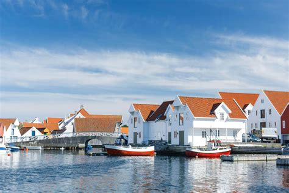
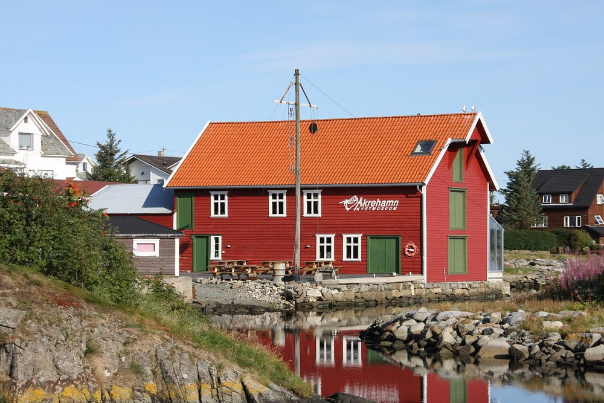
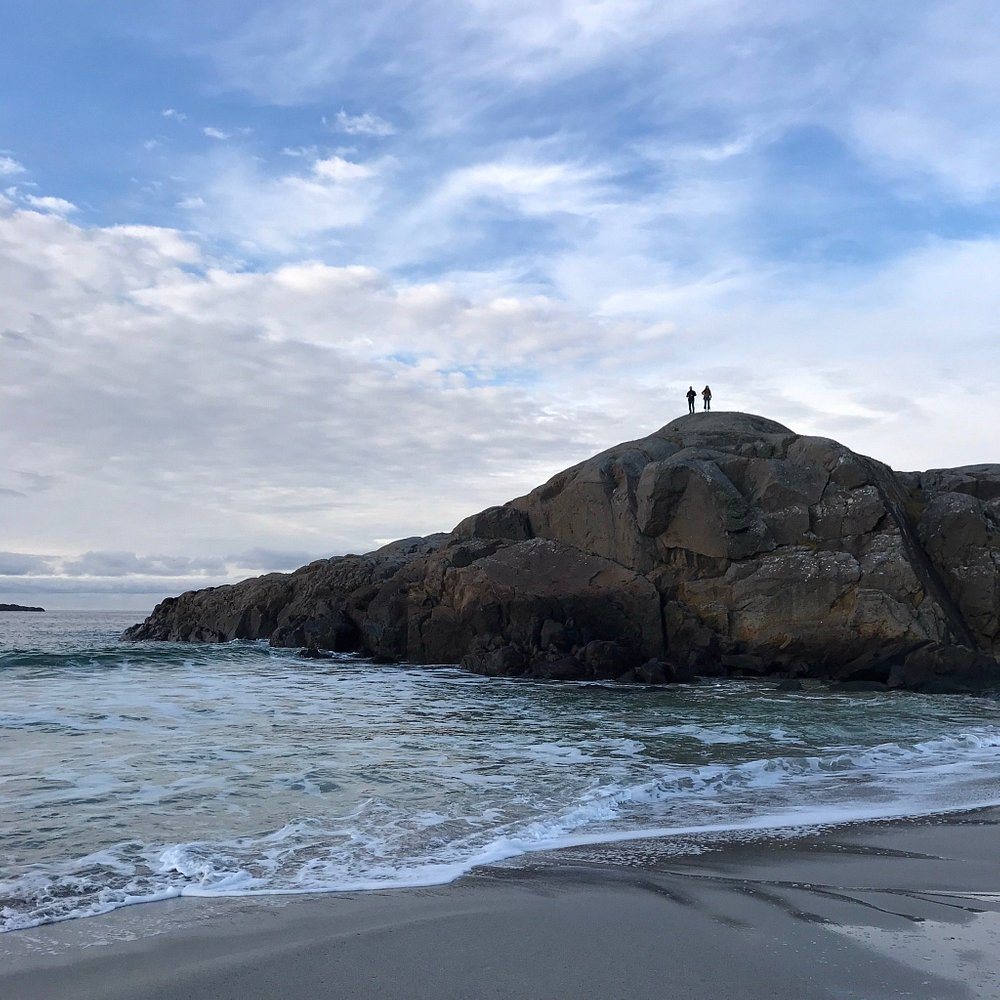
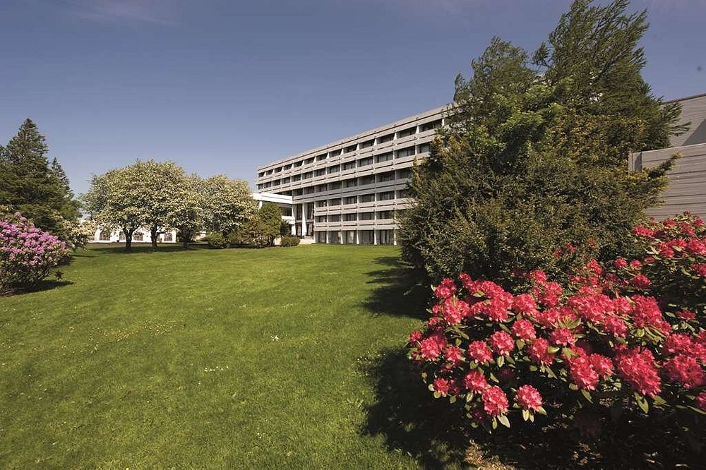

Norvège (Skudeneshavn)
Explorez Skudeneshavn

Se divertir
Des lieux à voir, des rues à explorer et des expériences emblématiques.
Åkrehamn Kystmuseum

Se reposer
Un mélange de charme, de modernité et de valeurs sûres.
Sandvesanden

Norneshuet Overnatting
Radisson BLU Hotel Haugesund
